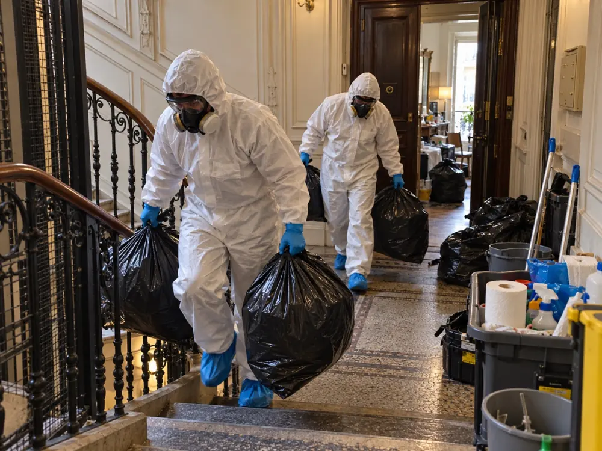
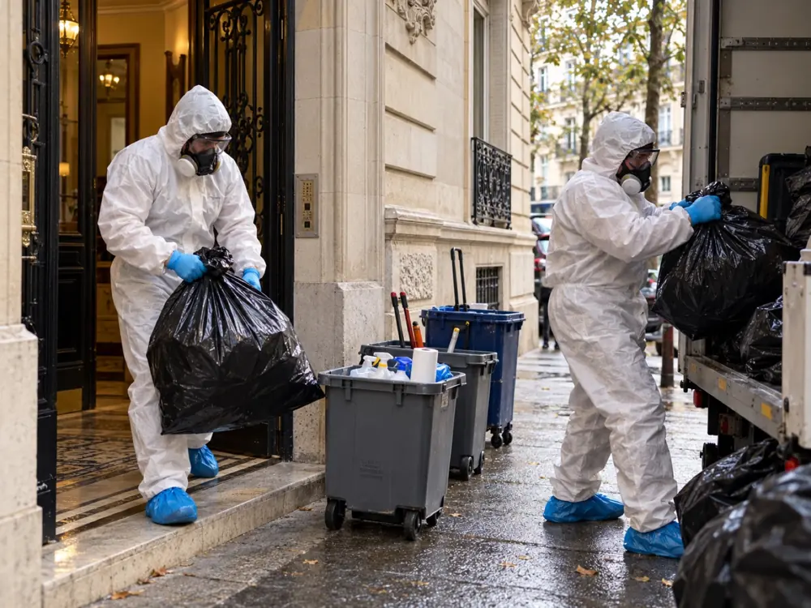

Nettoyage syndrome de Diogène à Paris 14e (75014)
Comprendre la situation, puis remettre le logement en état avec calme, méthode et respect de la personne.
Quand un proche s’est replié dans un logement envahi d’objets et de déchets, on ne sait souvent ni par où commencer ni à qui s’adresser. Dans le 14e arrondissement, le XV du Nettoyage vous écoute, visite le logement sans jugement et vous remet un devis écrit gratuit.
Selon le devis, nous assurons le tri des effets personnels, le débarras, le nettoyage approfondi, la désinfection et le traitement des origines d’odeurs, dans la plus grande discrétion.
gratuitvisite et chiffrage
Un logement qui s’est refermé sur son occupant : par où l’aborder ?
Un appartement du 14e arrondissement peut, comme n’importe où, se remplir progressivement de sacs, de papiers, d’objets et de déchets jusqu’à devenir difficile à habiter. La personne y vit encore, souvent seule, et refuse parfois toute visite.
Notre rôle n’est pas de juger ni de poser un diagnostic, qui revient à un médecin. Nous vidons, trions, nettoyons, désinfectons et traitons les odeurs, en respectant ce à quoi l’occupant tient. Nous intervenons dans les studios, les deux-pièces, les appartements familiaux et leurs annexes du 75014.
Le 14e se compose de quatre quartiers (Montparnasse, Parc-de-Montsouris, Petit-Montrouge et Plaisance). Donnez-nous simplement un repère, Montparnasse, Denfert-Rochereau ou Alésia, et l’étage : nous prévoyons l’accès et le stationnement avant de venir.
Parce qu’une telle situation est d’abord humaine, nous prenons le temps de vous écouter avant de parler de matériel, de volume ou de prix. La visite et le devis écrit sont gratuits.
- Visite à domicile, puis devis écrit avant toute intervention
- Tri attentif des papiers, de l’argent, des bijoux et des souvenirs
- Débarras, nettoyage, désinfection et traitement des odeurs selon le devis
- Équipes protégées et véhicule sans marquage

Ce que recouvre le syndrome de Diogène, et ce qu’il ne résume pas
L’expression est popularisée en 1975 par le gériatre américain Allison N. Clark, qui décrit un trouble du comportement conduisant à un logement négligé, parfois insalubre.
Le nom surprend : il renvoie au philosophe grec Diogène de Sinope, qui avait choisi une vie dépouillée. C’est précisément l’inverse de ce que l’on observe ici, où les objets s’accumulent. L’accumulation compulsive, ou syllogomanie, peut faire partie du tableau, mais ne le résume pas.
Les descriptions médicales relèvent généralement plusieurs traits : une négligence importante de l’hygiène personnelle et du logement, l’entassement d’objets variés, un isolement social, un déni de la situation avec peu de honte, et un refus de l’aide, vécue comme une intrusion. Le syndrome est le plus souvent repéré chez des personnes âgées, mais il peut apparaître à d’autres âges. Il suit fréquemment un choc : décès d’un conjoint ou d’un proche, traumatisme, manque d’affection, et surtout isolement.
Le lien avec la santé mentale existe, sans être systématique : certaines personnes souffrent de dépression, de troubles cognitifs ou d’autres pathologies, d’autres non. C’est pourquoi un avis médical est précieux avant tout chantier. Il aide à comprendre la situation et à préparer ce qui suivra le nettoyage.
Six situations concrètes qui doivent alerter un proche
Aucune liste ne remplace l’avis d’un professionnel. Voici néanmoins ce que les familles, les voisins et les gardiens nous décrivent le plus souvent.
Le séjour n’est plus un séjour
Canapé, table et chaises sont recouverts. La personne dort, mange et vit dans un seul recoin.
Tout est conservé
Emballages, journaux, objets cassés, vêtements usés : jeter paraît inconcevable, même pour du manifestement inutilisable.
Les sacs ne sortent plus
Ordures et restes de repas restent sur place. Des odeurs, puis des nuisibles, s’installent.
Le courrier s’entasse
Factures et convocations ne sont plus ouvertes. Les impayés et les retards en découlent.
Le corps est négligé
Toilette, linge et repas sont délaissés. La personne peut paraître indifférente à son état.
La porte reste close
Visites et aide sont refusées. L’intrusion est mal vécue, même quand elle part d’une bonne intention.
Observer un ou plusieurs de ces signes ne vaut pas diagnostic. Le plus utile est d’en parler à son médecin traitant ou à un service social, puis de préparer le nettoyage avec la personne plutôt que sans elle.
Comment aborder quelqu’un qui refuse l’aide, sans le braquer
Face à un logement envahi, le premier réflexe est souvent de vouloir tout vider d’un coup. C’est rarement ce qui fonctionne : la personne se sent dépossédée, se ferme davantage et peut couper les liens. La confiance se construit lentement.
Ce qui aide généralement : parler de la personne avant de parler du logement, éviter les mots blessants (« sale », « dépotoir »), proposer une aide limitée plutôt qu’un grand ménage, laisser la décision de ce qui part à celui ou celle qui l’a gardé, et accepter que les premières réponses soient négatives.
Ce qui aggrave la situation : agir en cachette, jeter à son insu, menacer d’expulsion ou de placement, poser un ultimatum. Si l’occupant refuse toujours, tournez-vous vers son médecin, une assistante sociale ou, s’il en a un, son représentant légal. Nous pouvons vous expliquer ce que nous ferions le jour où il sera d’accord, sans jamais passer outre son refus.
Pourquoi on ne laisse pas un logement dans cet état
Au-delà de l’aspect, un logement encombré et insalubre expose l’occupant, ses voisins et parfois l’immeuble entier.
Pour la santé
Moisissures, poussières, déchets en décomposition et nuisibles aggravent les problèmes respiratoires et favorisent les infections.
Pour la sécurité
Les passages obstrués augmentent le risque de chute. Les amas près d’une source de chaleur ou d’une installation électrique accroissent le risque d’incendie, et rendent l’intervention des secours plus difficile.
Pour le voisinage
Odeurs, infiltrations et nuisibles peuvent se propager aux logements voisins et provoquer des tensions.
Pour le logement
Humidité, sols et murs dégradés, installations masquées : plus on attend, plus la remise en état est lourde.
Pour la situation administrative
Loyers, charges et courriers non traités peuvent mener à des litiges avec le bailleur ou la copropriété.
Pour la personne
L’isolement se renforce. Un nettoyage mené avec respect peut, à l’inverse, rouvrir la porte à d’autres aides.
Six étapes, de l’appel au bilan final
Chaque étape est annoncée avant d’être réalisée.
L’appel
Vous décrivez la situation : adresse, étage, qui habite le logement, ce qui vous inquiète. Si des photos existent, elles nous aident à préparer la visite.
La visite
Nous faisons le tour du logement, mesurons l’ampleur du travail, repérons l’accès et notons avec vous ce qui doit être préservé.
Le devis
Il est écrit, détaillé, et sépare le tri, le débarras, le nettoyage, la désinfection et les éventuels travaux. Rien ne commence sans votre accord.
Le dégagement et le tri
Nous rouvrons d’abord les passages puis nous trions pièce par pièce, selon les règles fixées ensemble.
L’assainissement
Lavage approfondi, désinfection prévue au devis, recherche et traitement de l’origine des odeurs.
Le bilan
Nous parcourons les pièces avec vous et remettons une facture détaillée.
Plus de détails sur la page méthode.
Ce qui est gardé, ce qui part, et qui décide
Dans l’amas se cachent parfois les pièces les plus précieuses : papiers d’identité, relevés, espèces, bijoux, lettres, photographies. Les jeter par erreur serait irréparable, d’où une règle simple : on décide avant d’évacuer.
À la visite, nous convenons avec vous des catégories à conserver : documents administratifs, pièces d’identité, argent, bijoux, photos et souvenirs, clés et objets importants pour l’occupant. Ils sont rassemblés à part, puis remis à la personne, à ses proches ou à son représentant. Les déchets, les objets brisés et ce qui est souillé sont évacués. En cas de doute sur un objet, ou de désaccord, nous suspendons le tri de la zone concernée jusqu’à ce que vous ayez tranché.
Signalez dès le départ les annexes à inclure dans le devis : cave, parking, chambre de service, balcon.

Après le débarras : laver, désinfecter, traiter ce qui sent
Un logement vidé n’est pas un logement propre. Les dépôts incrustés, l’humidité et les résidus alimentaires restent dans les sols, les joints et les textiles.
Nous commençons par la cuisine et la salle de bain, souvent les plus atteintes. Le lavage en profondeur précède la désinfection, qui est choisie selon les matériaux et les besoins, comme convenu au devis. Pour les odeurs, nous cherchons la source plutôt que d’utiliser un parfum d’ambiance.
Si nous trouvons des cafards, des rongeurs ou des punaises de lit, nous vous prévenons. Leur éradication relève d’un professionnel de la désinsectisation ou de la dératisation, que nous pouvons aider à faire intervenir.


Un logement propre, mais surtout un point de départ
Selon le devis, l’intervention comprend le tri, le débarras, le nettoyage approfondi, la désinfection et le traitement des odeurs. Sols, murs, vitres, radiateurs, cuisine et sanitaires sont remis en état de propreté.
Une fois l’espace libéré, des défauts cachés apparaissent parfois : sols abîmés, humidité, moisissures, installations électriques ou de plomberie à vérifier. Nous vous en informons franchement. Les travaux utiles sont chiffrés à part.
Le nettoyage traite le logement, pas ce qui a conduit à l’accumulation. Pour éviter la rechute, un suivi s’impose : médecin traitant, service social, aide à domicile, proche présent régulièrement. Plus il est mis en place tôt, avec l’accord de la personne, plus le résultat dure.
- Sols, murs, vitres et radiateurs lavés selon le devis
- Cuisine et sanitaires désinfectés avec des produits adaptés
- Facture détaillée et visite finale pièce par pièce

Ce qui fait varier le coût d’un nettoyage Diogène à Paris 14e
Un tarif au mètre carré ne signifierait rien : à surface égale, deux logements peuvent exiger des moyens très différents. Voici ce que nous évaluons lors de la visite.
La surface et les annexes
Un studio ne se compare pas à un grand appartement avec cave et chambre de service.
Le volume à évacuer
Plus il y a de sacs, de cartons et de meubles, plus le tri et le portage sont longs.
L’accès
Étage élevé, escalier étroit ou ascenseur exigu allongent chaque rotation.
L’état des surfaces
Un logement encombré mais sain ne demande pas le même travail qu’un logement très souillé.
Nuisibles et humidité
Leur traitement relève de spécialistes et s’ajoute au nettoyage.
Les travaux
Ils sont chiffrés séparément et réalisés seulement avec votre accord.
Le devis est écrit, gratuit et remis après la visite. Il précise ce qui sera réalisé selon l’état du logement : tri et débarras, nettoyage approfondi, désinfection et traitement des odeurs si besoin, puis travaux éventuels chiffrés à part. Pour comprendre sa composition, consultez notre page tarifs.
Cinq questions à poser avant de confier ce chantier
L’intervention a lieu dans un espace très personnel : comparez plusieurs devis écrits et lisez-les en détail. Voici ce qu’il faut exiger :
- Des justificatifs : numéro SIRET et assurance de responsabilité civile professionnelle
- Un prix décomposé : tri, évacuation, déchetterie, désinfection et ce qui est exclu
- Une règle claire pour les papiers, l’argent et les objets personnels
- Une visite avant le chiffrage : un montant donné par téléphone sans voir les lieux reste une estimation
- Le respect de la discrétion : véhicule sans marquage, tenue neutre, horaires adaptés

Enfant, voisin, bailleur, tuteur : trois situations types
Nous sommes appelés par des enfants, des voisins, des gardiens, des bailleurs, des syndics, des tuteurs ou des travailleurs sociaux. Le déclencheur est souvent une odeur, un dégât des eaux, une hospitalisation, un décès ou une vente.
La personne est d’accord
Nous la rencontrons avec ceux qui l’accompagnent légitimement, expliquons le déroulement, repérons ce qui compte et trions avec elle, sans rien lui imposer.
La personne refuse
Mieux vaut patienter que forcer. Rapprochez-vous de son médecin, d’une assistante sociale ou de son représentant légal. Nous n’intervenons pas contre son refus.
La situation est urgente
Si la santé ou la vie d’une personne est en danger, appelez d’abord les secours. Le logement sera traité ensuite.
Le logement est très dégradé sans lien avec le syndrome de Diogène ? Voyez notre page logement insalubre. Nous intervenons aussi dans les arrondissements voisins : Paris 6e, Paris 13e et Paris 15e.
Nettoyage Diogène dans les autres arrondissements de Paris
Le XV du Nettoyage intervient dans les vingt arrondissements, avec la même méthode et le même devis écrit gratuit après visite. Retrouvez la page de votre quartier :
Paris 1er · Paris 2e · Paris 3e · Paris 4e · Paris 5e · Paris 6e · Paris 7e · Paris 8e · Paris 9e · Paris 10e · Paris 11e · Paris 12e · Paris 13e · Paris 15e · Paris 16e · Paris 17e · Paris 18e · Paris 19e · Paris 20e
Nettoyage Diogène à Paris 14e : vos questions
Le syndrome de Diogène, est-ce la même chose que l’accumulation compulsive ?
Non, pas tout à fait. L’accumulation, ou syllogomanie, peut en faire partie, mais le syndrome de Diogène désigne un ensemble plus large : négligence de soi et du logement, isolement, refus de l’aide. Seul un professionnel de santé peut établir un diagnostic.
Combien coûte un nettoyage Diogène dans le 14e arrondissement ?
Le coût varie d’un logement à l’autre : surface, volume à sortir, étage, état des surfaces et traitements nécessaires jouent tous. Le devis écrit est gratuit, établi après la visite, et ne vous engage à rien.
Mon père vit seul et refuse que nous l’aidions : que pouvons-nous faire ?
Rien contre sa volonté. Le syndrome de Diogène ne retire pas automatiquement à une personne sa capacité juridique, et ses droits comme sa dignité restent à respecter, même sous curatelle ou sous tutelle. Selon la mesure de protection, la décision appartient à la personne qui en est chargée, parfois au juge. Si l’occupant refuse ou si la famille est divisée, nous n’intervenons pas sans base légale suffisante et nous vous encourageons à contacter le médecin traitant, le service social ou le représentant légal.
Faut-il que la personne soit présente pendant le chantier ?
Ce n’est pas obligatoire, mais sa présence, si elle le souhaite, rend le tri plus juste. Elle peut aussi choisir de n’être là qu’à certains moments. Nous nous adaptons à ce qu’elle peut supporter.
Le logement sera-t-il de nouveau encombré après le nettoyage ?
C’est un risque réel, car le nettoyage ne traite pas les causes. Un suivi par le médecin, le service social ou un proche, mis en place avec la personne, aide à éviter la rechute. Nous pouvons vous conseiller sur les relais à solliciter.
Faites-vous aussi des nettoyages après décès dans le 14e arrondissement ?
Oui. C’est une autre prestation, avec sa propre page : nettoyage et désinfection d’un logement après un décès à Paris.
Un appel, un devis gratuit à Paris 14e
Dites-nous l’adresse, l’étage, le type de logement et si quelqu’un y habite encore. Quelques photos envoyées par SMS facilitent la préparation de la visite. Tout reste confidentiel.
07 57 83 26 26